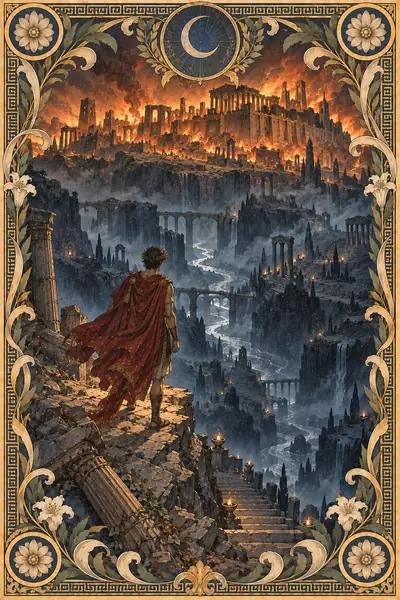

- 網頁版不再標示 Beta，成為正式版The web version leaves beta
- 修正 Email 登入：驗證碼是 8 位數，之前輸入到第 6 位就送出Fixed email sign-in: the code has 8 digits, but it was sent after the 6th
- 關掉或切走網頁時，會先把進行中的這一局存起來Your current run is saved when you close or leave the page

故事與原作小說Story & the novel
八章故事，一路向東Eight chapters, heading east
✦
遊戲改編自創作中的小說《米農》。一個只想過平靜日子的海邊少年被帶進戰爭，慢慢變成別人口中的傳說。The game is adapted from MENON, a novel in progress. A coastal boy who only wants quiet days is taken to war, and slowly becomes the legend other people tell.
Seyagales 是他自己；Menon，是戰爭之後別人口中的他。Seyagales is who he is. Menon is who others say he became.
跟著 Seyagales 從伊奧斯海邊的漁村一路走到東方的海。8 章故事可以單純閱讀，也可以在「戰役」裡一章一章打過去：牌組一路帶著走，輸了就從那一章重來，不扣任何東西。Follow Seyagales from a fishing village on the shore of Ios toward the eastern sea. Read all 8 chapters, or play them one by one in Campaign mode: your deck carries forward, and losing simply restarts the chapter at no cost.